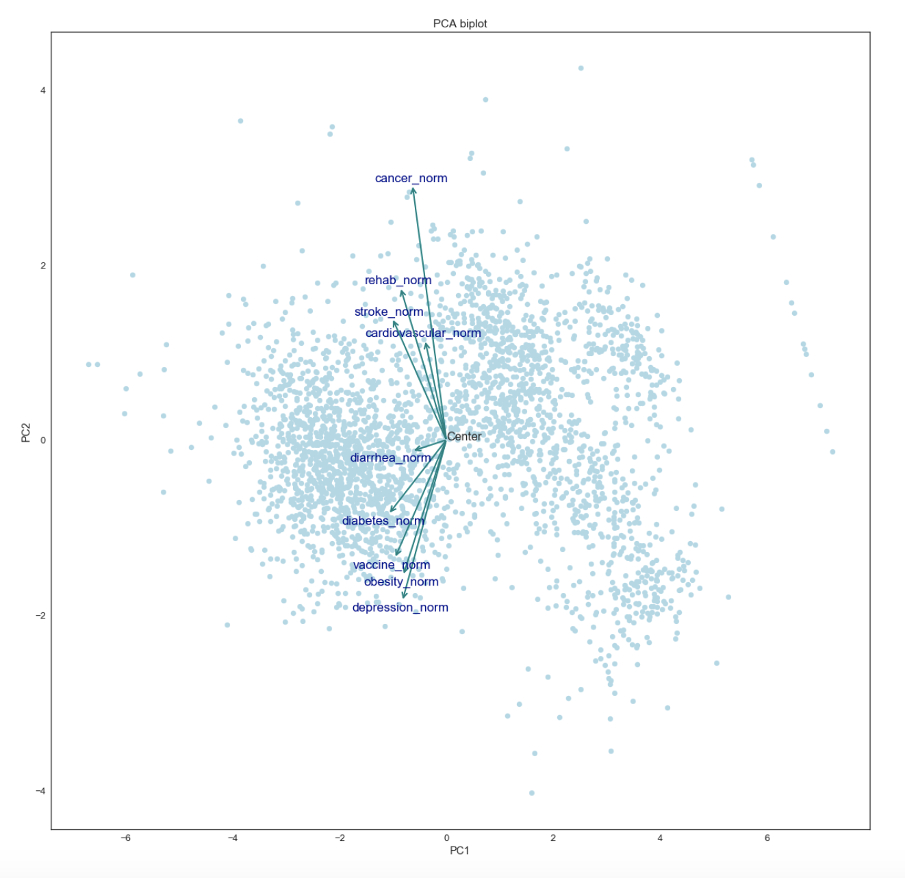
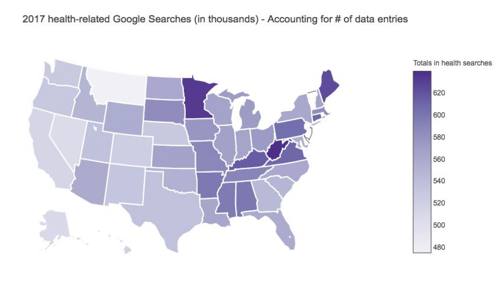
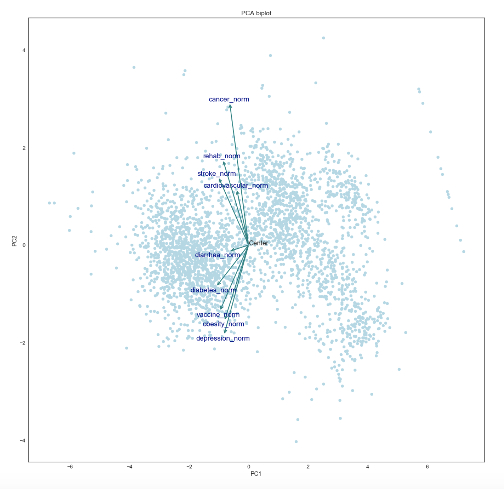
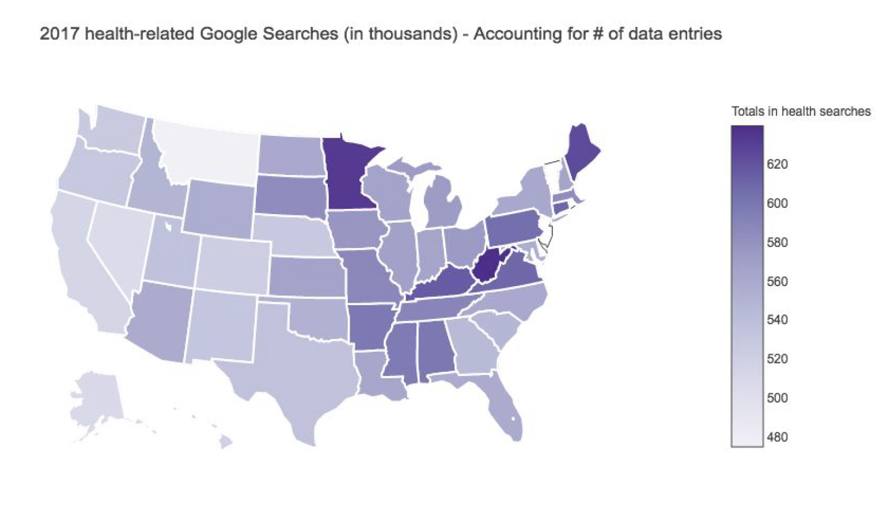

Physician Network Diagram
Trinity Health - Population Health Analytics

Trinity Health - Population Health Analytics


Trinity Health - Population Health Analytics
Trinity Health - Population Health Analytics


 



SI 370 - Data Manipulation
Read my full report on health-related Google searches here: